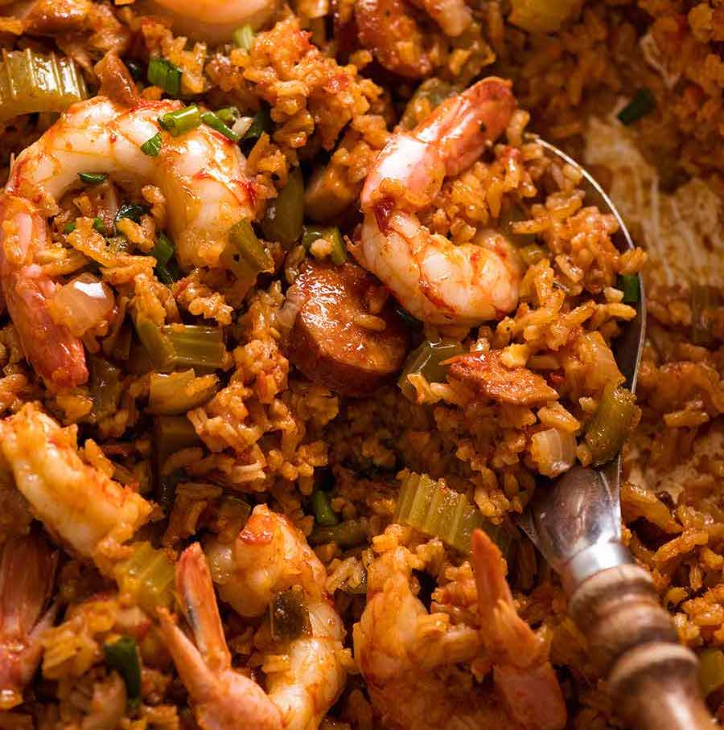

Jambalaya Recipe

Ingredients you'll need:
- 1 tbsp vegetable oil
- 180g of Bacon
- 200g of Andoillie Sausage
- 300g chicken thigh
- 12 prawns/shrimp
- 4 garlic cloves
- 1 tbsp butter
- 1 onion
- 2 celery ribs
- 2 green capsicum/bell pepper
- 1.25 cups long grain rice
- 2.5 cups chicken broth
- 200g crushed canned tomatoes
- 2 tbsp tomato paste
- 1 cup green onions
Recipe:
- Preheat oven to 180C/350F (all types).
- Heat oil in a very large skillet or dutch oven over medium high heat.
- Add bacon, cook for 30 seconds (to start fat melting), then add sausages. Cook until sausages are golden - about 3 minutes - then remove into bowl.
- Add chicken into the pan and cook until golden (doesn't need to cook inside), then add to bowl with bacon.
- Sear prawns in the pan for 1.5 minutes on each side, then transfer to a separate bowl (reserve until later).
- Add butter, then garlic, onion, celery and capsicum. Cook for 5 minutes or until soft.
- Add rice, stir to coat grains in oil.Add chicken broth, tomato paste, canned tomato, thyme and Spices. Stir well, then add chicken, sausages and bacon (including all liquid).
- When you see bubbles across most of the surface, stir well once more. Ensure all rice is submerged, cover with lid, then transfer to oven.
- Bake 30 minutes, then remove - rice should be practically cooked
- Add prawns/shrimp and green onions, QUICKLY (but gently!) stir through, cover with lid, and return to oven for just 3 minutes (just to heat prawns)
- Remove from oven (see video for finished consistency), stir gently then serve, garnished with more green onions if desired.